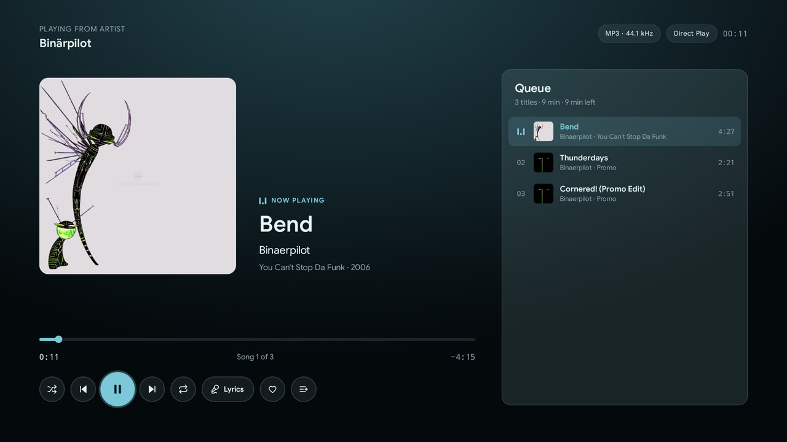

Jellyfin,
ganz einfach.
Glacier ist ein moderner Jellyfin-Client, von Grund auf für den Fernseher gebaut statt dorthin portiert. Er hält sich zurück, damit du schnell findest, was du schauen willst.
- Android TV, Google TV & Fire TV
- Open Source, GPL-3.0
- Keine Werbung, kein Tracking
Klar statt kompliziert
Ein klarer Weg zu dem, was du schauen willst. Kein Menü-Labyrinth aus einer Handy-App.
Für die Fernbedienung gebaut
Jeder Screen ist von Anfang an für das Steuerkreuz entworfen. Fokus, Abstände und Bewegung sind auf die Couch abgestimmt, nicht von Touch übernommen.
Nichts im Weg
Keine Werbung, keine Account-Zwänge, keine Ablenkung. Nur deine Bibliothek, klar dargestellt.

Bibliothek
Alles durchsuchen, auf deine Art
Jede Bibliothek an einem Ort, bewusst einfach gehalten: das Sortieren und Filtern, das man von einer modernen App erwartet, ganz ohne Unordnung.
- Sortieren und filtern nach Genre, Favoriten oder Ungesehenem
- Zusammengehörige Filme als Sammlungen gruppiert
- Eine A–Z-Leiste für große Bibliotheken

Details
Jeder Titel, vollständig erschlossen
Besetzung, Crew und Kontext auf jeder Detailseite, mit Trailern und Spuren-Auswahl einen Klick entfernt.
- Besetzung, Crew und ähnliche Titel
- Lokale und YouTube-Trailer, direkt abspielbar
- Auswahl von Audio- und Untertitelspur
- Wann ein Titel endet, wenn du ihn jetzt startest


Player
Zum Schauen gemacht, nicht zum Herumdrücken
Der Player kümmert sich um die kleinen Unterbrechungen, damit ein Serienabend einfach weiterläuft.
- Intro, Rückblick und Abspann mit einem Tastendruck überspringen oder automatisch überspringen lassen
- Die nächste Episode startet nach einem kurzen Countdown, oder du bleibst für den Abspann
- Vorschaubilder beim Spulen, damit du genau die richtige Szene trifft
- Der Fernseher wechselt auf die Bildrate des Videos, damit Filme ohne Ruckeln laufen

Musik
Musik, die weiterläuft
Album starten und weiterstöbern. Die Musik spielt weiter, und der Mini-Player ist nur einen Tastendruck entfernt.
- Warteschlange, Playlists und Songtexte auf dem großen Bildschirm
- Sofort-Mix und Favoriten aus jedem Song
- Die Medientasten der Fernbedienung funktionieren überall in der App
Alles Weitere
Die Details, ohne die Komplexität
Neben Durchsuchen und Wiedergabe die Details, die eine gemeinsam genutzte TV-App einfach im Umgang machen.
Profile & Quick Connect
Ein Gerät, mehrere Personen. Profile sofort wechseln und sich per sechsstelligem Quick-Connect-Code an einem neuen Server anmelden.
Jugendschutz
Altersfreigaben und eine PIN halten gesperrte Titel und Einstellungen außer Reichweite, je Profil.
Spielt es, wie es ist
DTS, TrueHD und mehr laufen direkt, ohne Transkodierung. Wandelt der Server doch um, bleibt Surround-Ton über HDMI ARC erhalten.
Finden & anfragen
Die Suche findet auch Filme und Serien, die noch nicht auf deinem Server sind. Über Seerr fragst du sie direkt am Fernseher an, mit dem Plugin Jellyfin Enhanced.
Auf dem Startbildschirm
Weiterschauen und drei optionale Kanäle auf dem Android-TV-Startbildschirm, einen Tastendruck von der nächsten Folge entfernt. Nicht auf Fire TV.
Bleibt aktuell
Ein eingebauter Updater prüft GitHub Releases auf neue Stable- oder Beta-Builds und installiert sie ohne Umweg über den Browser.
Herunterladen
Glacier installieren
Kostenlos und ohne Konto. Für Android TV, Google TV und Fire TV ab Android 9.
- 1Downloader holenInstalliere die kostenlose App Downloader aus dem App Store deines Fernsehers.
- 2Code eingebenÖffne Downloader, gib den Code ein und erlaube die Installation.
- 3FertigAb jetzt hält sich Glacier selbst aktuell.
Unterstützen
Gefällt dir Glacier?
Glacier entsteht in meiner Freizeit und bleibt kostenlos, ohne Werbung und ohne Tracking. Wenn es deine Filmabende ein bisschen besser macht, hält ein Kaffee auf Ko-fi die Entwicklung am Laufen.